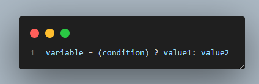
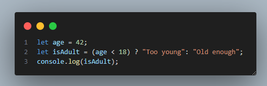

Ternary operator
Conditional, or ternary, operators assign a value to a variable, based on some condition. This is what the syntax would look like:
It takes three operands: a condition followed by a question mark ?, then an expression to execute if the condition is true followed by a colon :, and finally, the expression to execute if the condition is false.
This operator is frequently used as an alternative to an if else statement.
Here is an example of a ternary operator:
The ternary operator is much shorter than the if else.
Remember the discount example? If the total amount is equal to or above 1500 it will be discounted by 15%. Let's calculate and show the discounted bill to your customers using the ternary operator:
Lesson Takeaways
The ternary operator is in your coding arsenal now! Let's summarize the lesson:
you can use ternary operators as an alternative to if else statements
they have 3 operands: the condition, and 2 values, one of which will be assigned to the variable based on that condition
ternary operators make the code much shorter